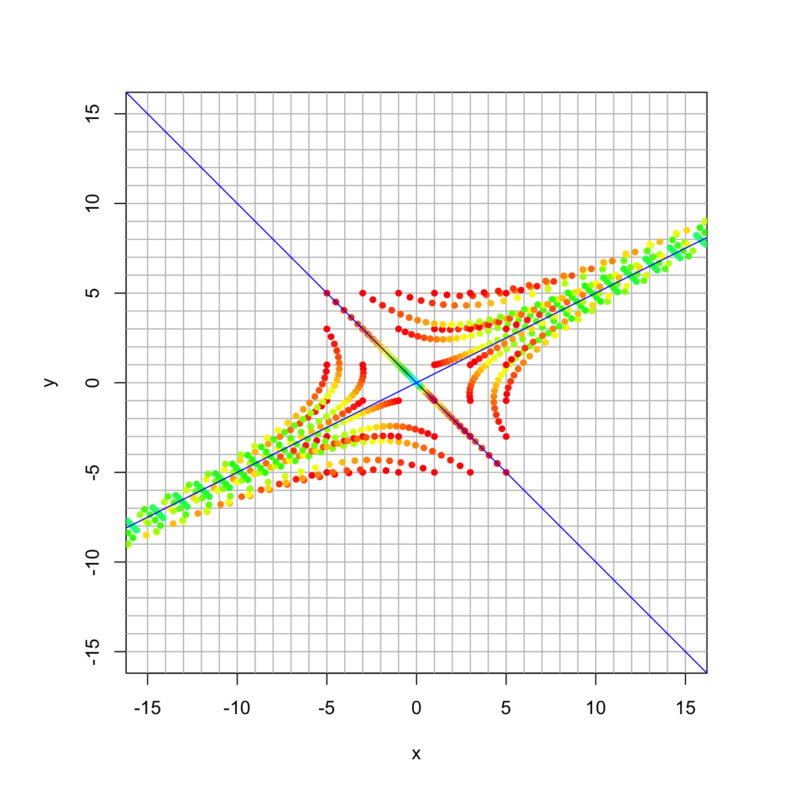
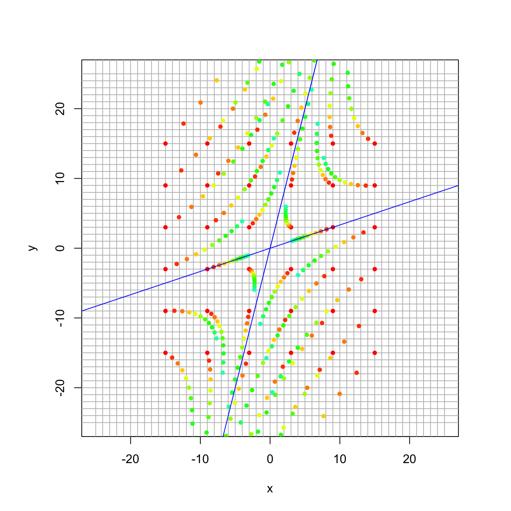
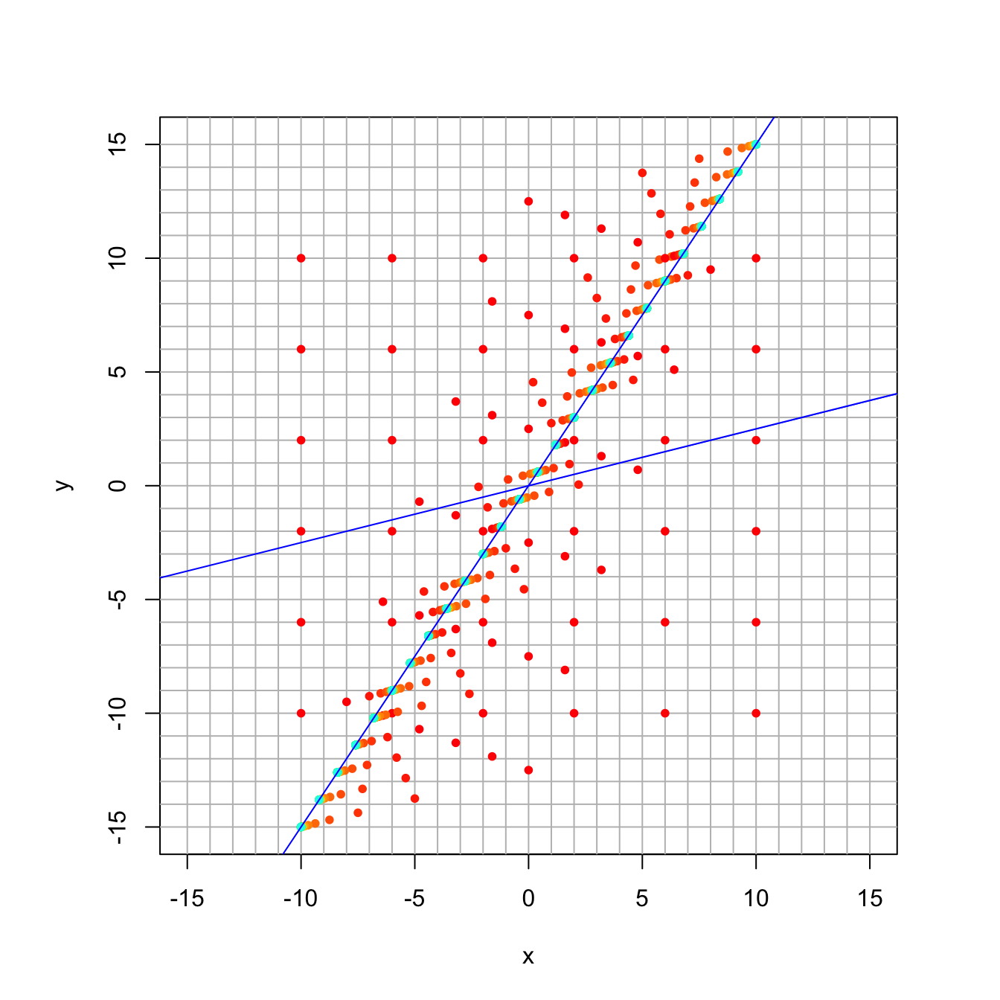
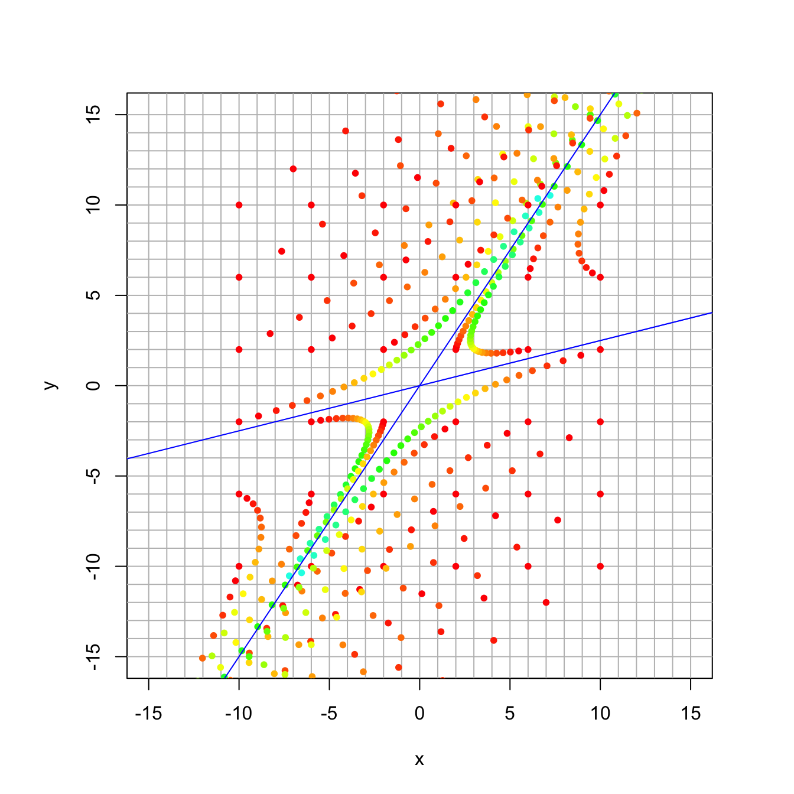
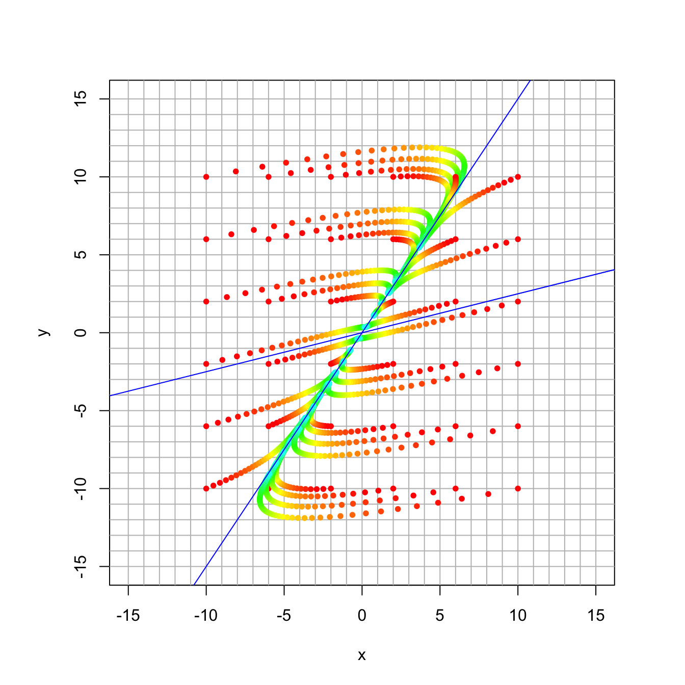
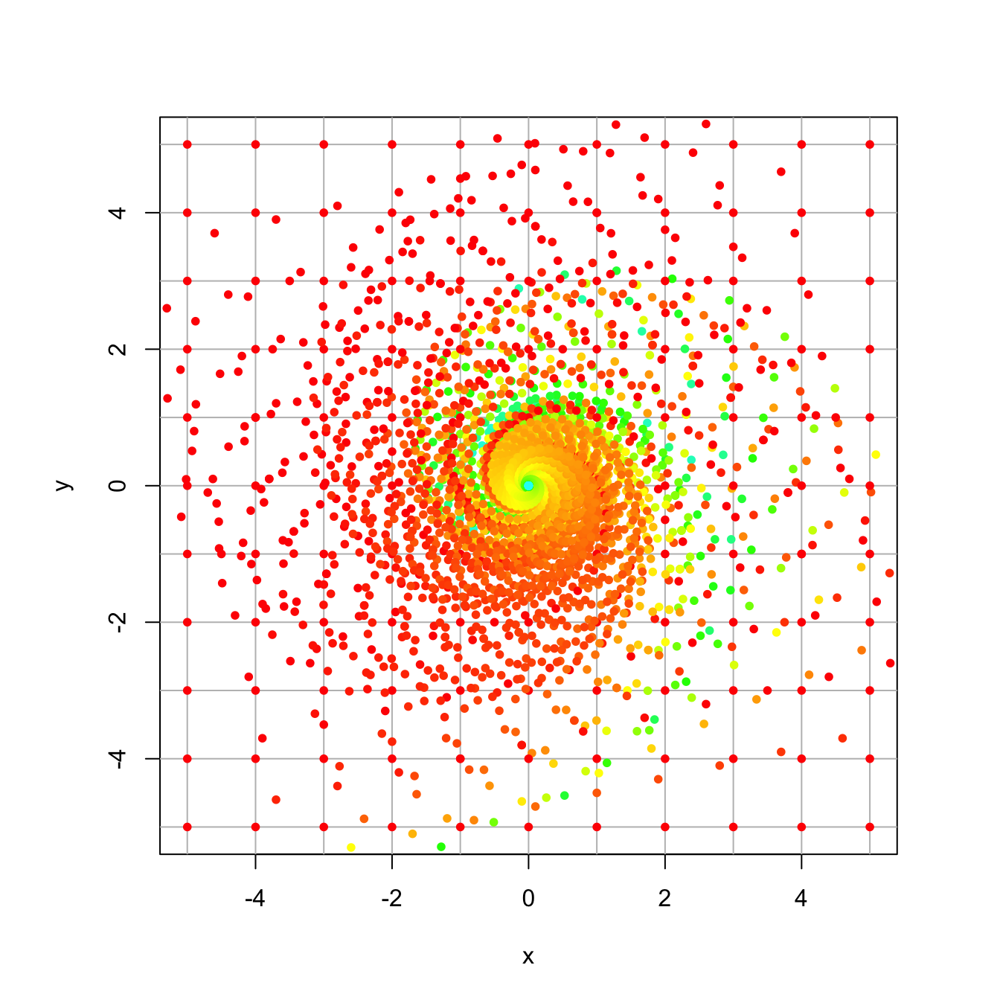

Section 22 Dynamical Systems in 2D
Let \(A\) be a square \(n \times n\) matrix and let \(\mathsf{x}_0 \in \mathbb{R}^n\). A dynamical system is a sequence of vectors \(\mathsf{x}_0,\mathsf{x}_1,\mathsf{x}_2, \ldots, \mathsf{x}_t, \ldots\) where \[ \mathsf{x}_{t} = A \mathsf{x}_{t-1} = A^t \mathsf{x}_0 \quad \mbox{for} \quad t \geq 1. \] The sequence \(\mathsf{x}_0,\mathsf{x}_1,\mathsf{x}_2, \ldots, \mathsf{x}_t, \ldots\) is called the trajectory for initial vector \(\mathsf{x}_0\).
A dynamical system evolves over time. The long-term behavior is governed by the eigenvalues of matrix \(A\). We will look at visualizations of some \(2 \times 2\) dynamical systems to develop some intuition about eigensystems.
22.1 Helper Function to Plot Dynamical Systems
Here is some special code, written by Professor Beveridge, that makes helpful plots. You need to execute this code chunk before the others.
get_traj <- function(mat, x0, num) {
traj = cbind(x0)
num
for (i in 1:num) {
traj = cbind(traj, mat %*% traj[,dim(traj)[2]])
traj
}
return(traj)
}
plot_traj <- function(mat, x0, num) {
traj = get_traj(mat,x0,num)
points(traj[1,],traj[2,], pch=20, col=rainbow(length(traj)))
}
trajectory_plot <- function(mat, t=20, datamax=5, plotmax=10, numpoints=10, showEigenspaces=TRUE) {
# initialize plot
par(pty = "s")
plot(c(0),c(0),type="n",
xlim=c(-plotmax,plotmax),ylim=c(-plotmax,plotmax),
xlab='x', ylab='y')
abline(h=-plotmax:plotmax, v=-plotmax:plotmax, col="gray")
mygrid <- expand.grid(x=seq(from = -datamax, by = 2*datamax/numpoints, l = numpoints+1),
y=seq(from = -datamax, by = 2*datamax/numpoints, l = numpoints+1))
for (i in 1:dim(mygrid)[1]) {
plot_traj(mat,c(mygrid[i,1],mygrid[i,2]),t)
}
if (showEigenspaces) {
eigen = eigen(mat)
#mylabel = cat('lambda=', eigen$values[1], 'and lambda=', eigen$values[2])
#title(xlab=mylabel)
v1 = zapsmall(eigen$vectors[,1])
v2 = zapsmall(eigen$vectors[,2])
if (! class(v1[1]) == "complex") {
if (v1[1] == 0) {
abline(v=0)
} else {
abline(a=0,b=v1[2]/v1[1], col="blue")
}
if (v2[1] == 0) {
abline(v=0)
} else {
abline(a=0,b=v2[2]/v2[1], col="blue")
}
}
}
}22.2 Our first example
Let’s start by looking at the example from the video
\[
A = \frac{1}{30}
\begin{bmatrix}
31 & 4 \\ 2 & 29
\end{bmatrix}.
\]
We get the most complete picture when we plot multiple trajectories at once. So we use the helper function trajectory_plot to plot the trajectories of a grid of points. It also plots the eigenspaces for the matrix. You can specify
- the matrix A
- the number of iterations
- the size of the square where the initial points lie
- the size of the plot
- the number of points along the side of the grid
A = 1/30 * cbind(c(31,2),c(4,29))
trajectory_plot(A, t=30, datamax=5, plotmax=15, numpoints=5)
This system is best understood by comparing what we see with the eigenvector and eigenvalues.
eigen(A)## eigen() decomposition
## $values
## [1] 1.1 0.9
##
## $vectors
## [,1] [,2]
## [1,] 0.8944272 -0.7071068
## [2,] 0.4472136 0.7071068We can see that we have slight expansion along \([ 2, 1]^{\top}\) and slight contraction along \([-1,1]\). The long term behavior is an expansion in the direction of \([2, 1]^{\top}\).
22.3 CheckPoint Question for today
Here is the checkpoint question for today (for which you found a closed-form solution).
A = 1/110 * cbind(c(97,-8),c(6,123))
eigen(A)## eigen() decomposition
## $values
## [1] 1.1 0.9
##
## $vectors
## [,1] [,2]
## [1,] -0.2425356 -0.9486833
## [2,] -0.9701425 -0.3162278And here is the corresponding plot of the dynamical system:
A = 1/110 * cbind(c(97,-8),c(6,123))
trajectory_plot(A, t=10, datamax=15, plotmax=25, numpoints=5)
22.4 Discussion Question 1
In class, we looked at a matrix with eigenvalues 1 and 1/2, and we plotted a trajectory starting at \((8,7)\) by hand. Its eigensystem is shown here:
A = rbind(c(0.4, 0.4), c(-0.15, 1.1))
eigen(A)## eigen() decomposition
## $values
## [1] 1.0 0.5
##
## $vectors
## [,1] [,2]
## [1,] -0.5547002 -0.9701425
## [2,] -0.8320503 -0.2425356And here is a trajectory plot
trajectory_plot(A, t=30, datamax=10, plotmax=15, numpoints=5)
22.5 Discussion Question 2
Here the matrix has the same eigenvectors, but now the eigenvalues are 1.0 and 0.9. It’s a little easier to see when the smaller eigenvalue converges more slowly.
A = rbind(c(0.88, 0.08), c(-0.03, 1.02))
eigen(A)## eigen() decomposition
## $values
## [1] 1.0 0.9
##
## $vectors
## [,1] [,2]
## [1,] -0.5547002 -0.9701425
## [2,] -0.8320503 -0.2425356trajectory_plot(A, t=30, datamax=10, plotmax=15, numpoints=5)
22.6 Discussion Question 3
Here the matrix has the same eigenvectors, but now the eigenvalues are 1.1 and 0.9.
A = rbind(c(0.86, 0.16), c(-0.06, 1.14))
eigen(A)## eigen() decomposition
## $values
## [1] 1.1 0.9
##
## $vectors
## [,1] [,2]
## [1,] -0.5547002 -0.9701425
## [2,] -0.8320503 -0.2425356trajectory_plot(A, t=30, datamax=10, plotmax=15, numpoints=5)
22.7 Discussion Question 4
Finally, here again the matrix has the same eigenvectors, but now the eigenvalues are 0.99 and 0.9.
A = rbind(c(0.882, 0.072), c(-0.027, 1.008))
eigen(A)## eigen() decomposition
## $values
## [1] 0.99 0.90
##
## $vectors
## [,1] [,2]
## [1,] -0.5547002 -0.9701425
## [2,] -0.8320503 -0.2425356trajectory_plot(A, t=50, datamax=10, plotmax=15, numpoints=5)
22.8 Your Turn
Now it’s your turn to explore some dynamical systems.
- Create trajectory plots for each of these dynamical systems.
- Characterize the long-term behavior.
- What direction to vectors converge to?
- Do magnitudes increase? decrease? stabilize?
- Calculate the eigenvectors and eigenvalues and compare them to your plot.
- The eigensystem should tell the same story as your plot.
If your original plot is confusing, try changing the parameters (initial square size, plot size, number of grid points).
Here is some code for you to adapt for the examples.
A = cbind(c(1,0),c(0,1))
trajectory_plot(A, t=30, datamax=5, plotmax=10, numpoints=10)
eigen(A)## eigen() decomposition
## $values
## [1] 1 1
##
## $vectors
## [,1] [,2]
## [1,] 0 -1
## [2,] 1 022.8.1 Example 1
\[ A = \frac{1}{60} \begin{bmatrix} 55& -8 \\ -1 & 53 \end{bmatrix} \]
22.8.2 Example 2
\[ A = \frac{1}{20} \begin{bmatrix} 24& -6 \\ 1 & 19 \end{bmatrix} \]
22.8.3 Example 3
\[ A = \frac{1}{110} \begin{bmatrix} 106& 12 \\ 6 & 92 \end{bmatrix} \]
22.8.4 Example 4
\[ A = \frac{1}{16} \begin{bmatrix} 17& -15 \\ 15 & 17 \end{bmatrix} \]